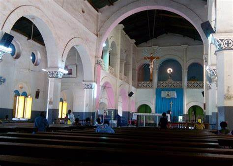
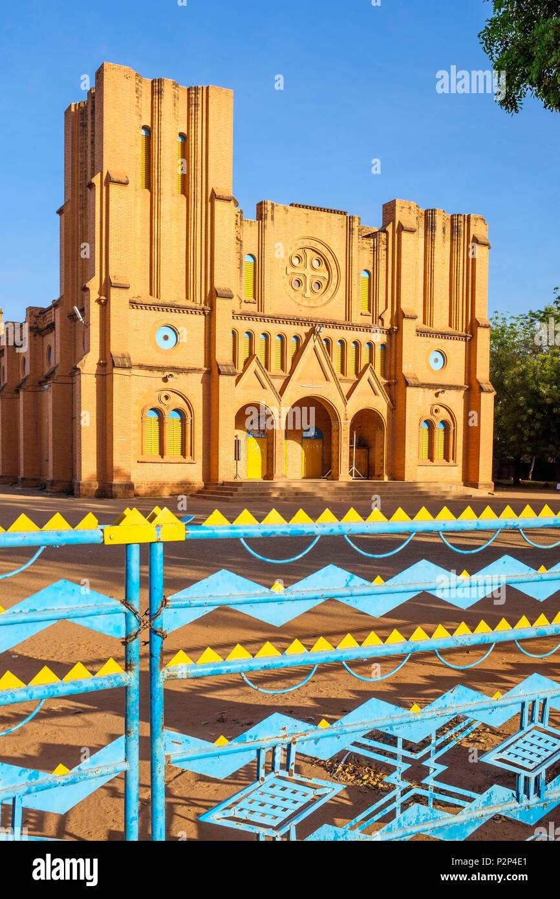
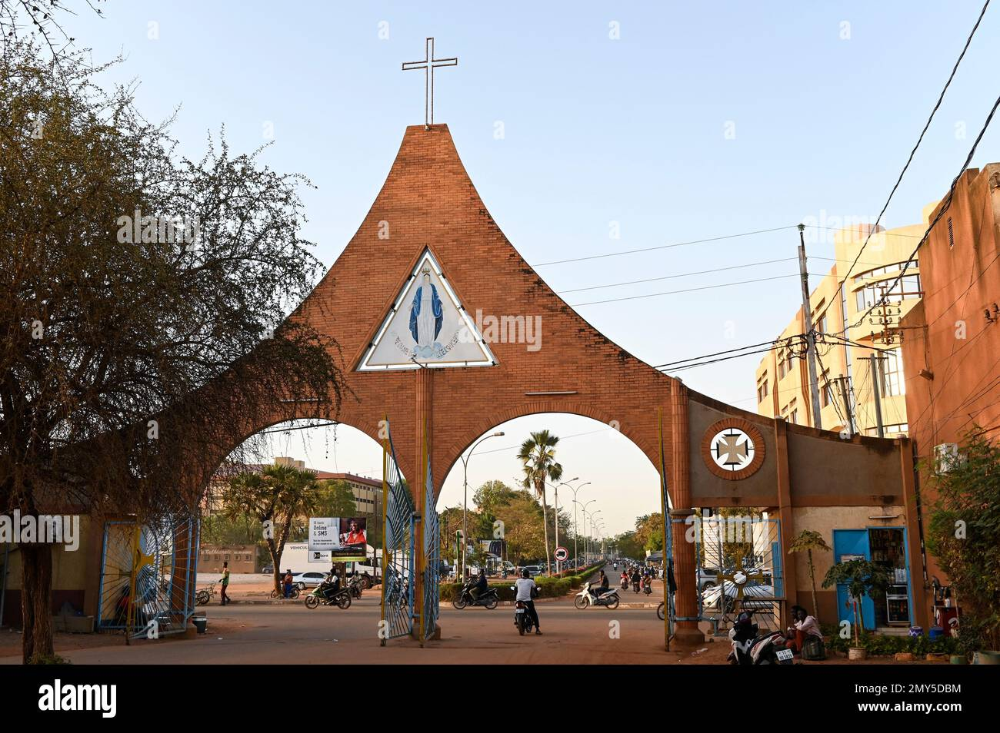

La Cathédrale de Ouagadougou, majestueuse et paisible, se dresse comme un sanctuaire de grâce au milieu de l’agitation urbaine. Ses flèches élancées semblent toucher le ciel, tandis que ses murs d’un blanc immaculé captent la lumière dorée du soleil, créant une aura presque céleste. L’architecture sobre, inspirée des lignes épurées du style néo-roman, respire la tranquillité et l’harmonie.
À l’intérieur, la douce pénombre des nefs contraste avec les éclats de lumière filtrant à travers les vitraux aux couleurs chaudes. Les bancs en bois poli, usés par des générations de fidèles, murmurent des prières anciennes. L’autel, simple et noble, attire le regard vers le chœur, où la lumière joue avec les courbes des arcs et la sobriété des ornements. L’air est empreint d’un silence sacré, seulement troublé par le bruissement discret des pas et le murmure des prières.
Plus qu’un lieu de culte, la Cathédrale est un carrefour où se croisent les croyants, les visiteurs et les rêveurs. Les chants des chorales, portés par les voûtes, résonnent comme une mélodie divine. À l’extérieur, sous l’ombre bienveillante des arbres, les fidèles se rassemblent après la messe, échangeant des sourires et des paroles apaisées. Quand le soleil couchant enflamme la façade, la Cathédrale semble bénir la ville entière, rappelant que la beauté et la spiritualité sont des refuges intemporels. Cathédrale de Ouagadougou | Un lieu de paix et de lumière
: Construite en banco entre 1934 et 1936 par les Pères blancs, son architecture combine influences romanes européennes et traditions ouest-africaines. Centre culturel actif avec concerts et expos.
*Historique de la Cathédrale de Ouagadougou (Cathédrale de l'Immaculée Conception)* La *Cathédrale de Ouagadougou, officiellement appelée **Cathédrale de l'Immaculée Conception*, est un lieu emblématique de la capitale burkinabè. Son histoire remonte à l'époque coloniale et témoigne de l'évolution du christianisme au Burkina Faso. *Origine et construction* - *1934-1936* : La cathédrale est construite sous l'initiative des *missionnaires français, notamment des **Pères Blancs* (Société des Missionnaires d'Afrique), pour servir d'église principale dans la colonie de Haute-Volta. - *Style architectural* : Elle présente un mélange de *style néo-roman* et d'influences locales, avec des murs en briques rouges et une structure imposante.
|  | 
| 
| |
|---|